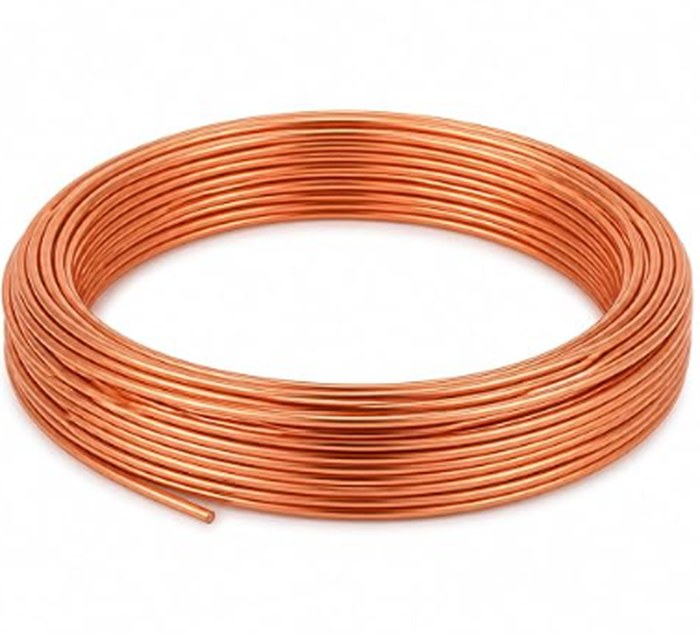
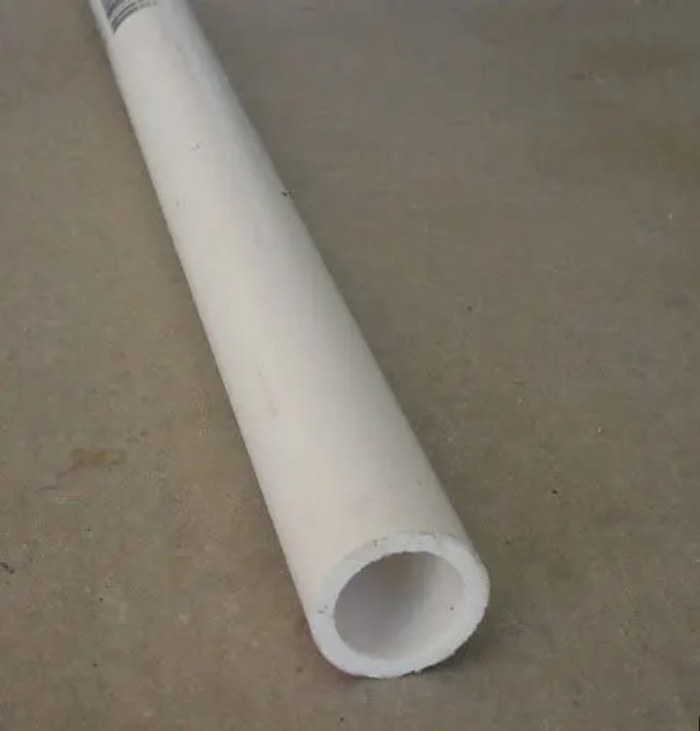
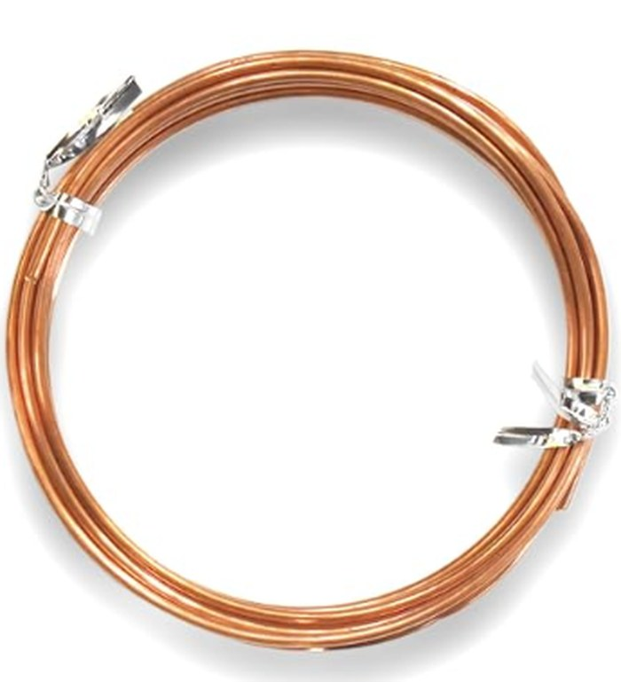
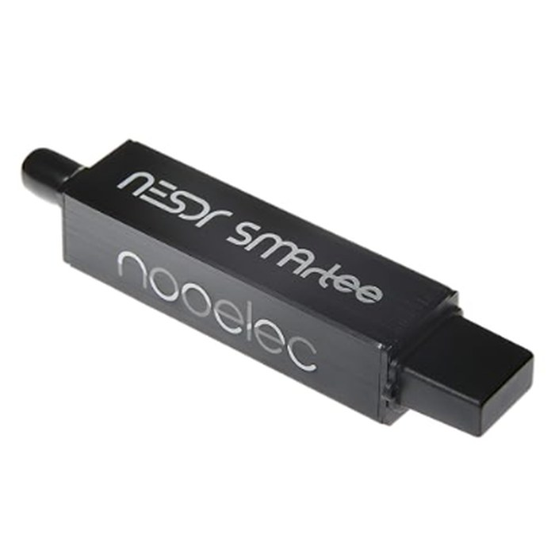
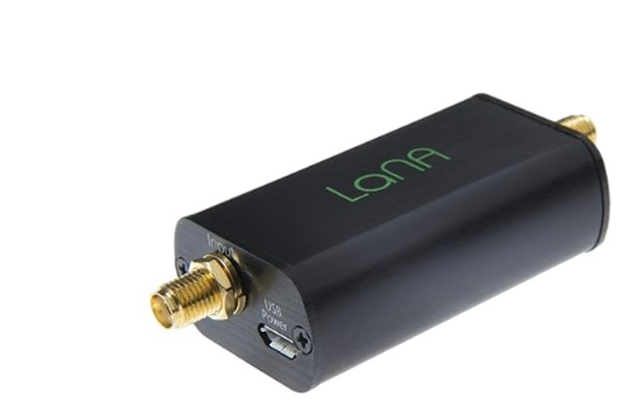
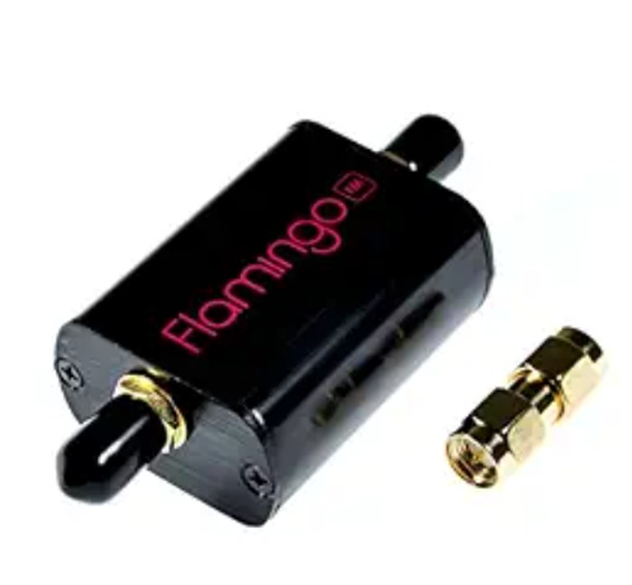
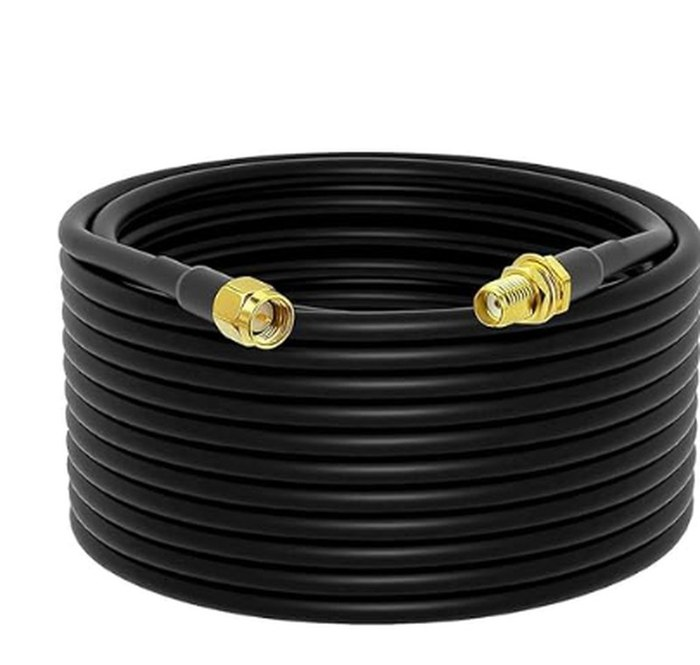

The exact parts used in this series — antenna materials and the SDR receive chain that turns them into images and data.

For the loop elements — the app's QFH calculator uses 2mm as its reference gauge for all its measurements.
Get this →
The support tube — the app calculates the minimum length for your target frequency (typically 80cm or more).
Get this →The feedline carrying signal from the antenna down to your SDR.
Get this →
Two arms, cut to length for your target frequency — the app's calculator gives you the exact measurement for each arm.
Get this →
The actual radio — plugs into your computer or Pi and does the receiving. Look for one with an always-on bias-tee if you're powering an LNA through the coax.
Get this →
Boosts the weak signal before it travels down the coax, right at the antenna end of the chain.
Get this →
Sits before the LNA and blocks strong local FM broadcast stations from swamping your receiver.
Get this →
Connects your coax feedline into the SDR's SMA input — a short jumper, not the long antenna-to-receiver run.
Get this →For tuning and verifying your antenna is actually resonant on your target frequency before you rely on it.
Get this →